来我家，可以游览这些地方
景区一：佗城镇（国家4A级旅游景区）
“秦汉重镇，唐宋名城”——佗城，不仅是一副辉煌文明的史诗画卷，更是一首永远唱不完的历史长歌。佗城是岭南最早设置的古县龙川县城，又是广东省首批公布的十一个历史文化名城之一，原称龙川城，后称循州城。民国30年（1941年）为纪念龙川首任县令赵佗，教育会通过改名为佗城。 秦始皇三十三年（公元前214年），秦南平百越，置龙川县，赵佗为令，设县治于今佗城。自秦代至民国，佗城都为龙川县治所，同时又是五代南汉至明初循州（路）治所。佗城历经2000余年沧桑，曾为粤东北部政治、文化、经济中心 。
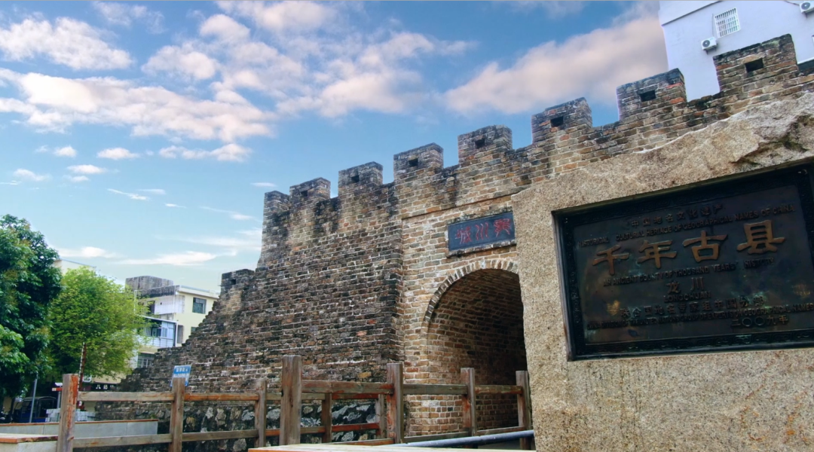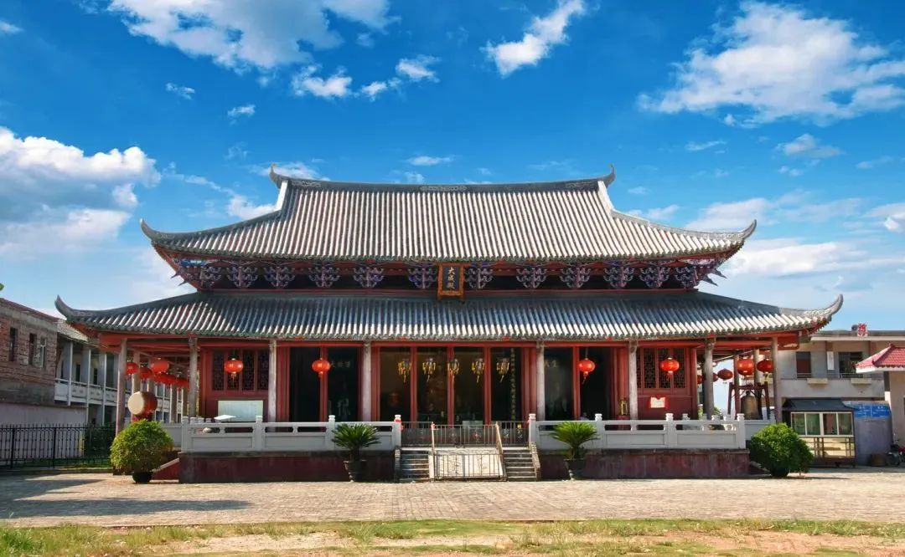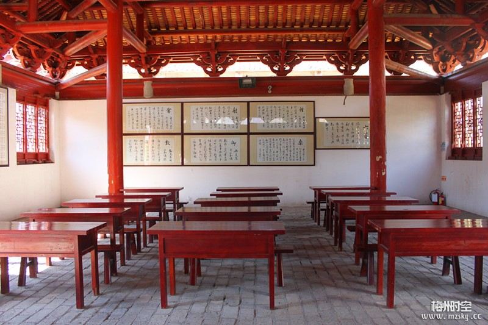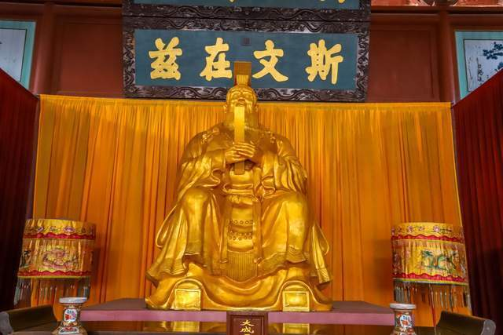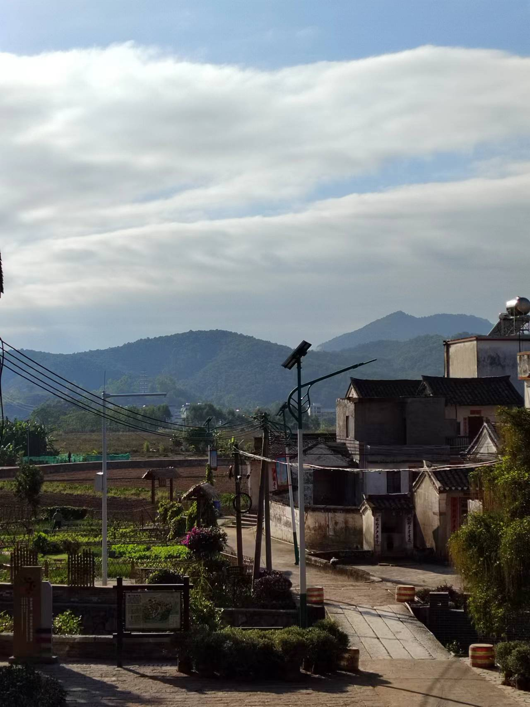
景点二：霍山（国家4A级旅游景区）
霍山旅游风景区位于广东省河源市龙川县田心镇，毗邻兴宁、五华，距龙川县城47公里，距河源市区146公里， 周旋七十余里，为峰三百七十有二，最秀者曰大佛迹。秦始皇时有霍龙字灵阳者居之，因名霍山。霍山旅游风景区是广东七大名山之一，海拔557米。霍山是省级森林公园，2014年被评为河源市最美景区，2015年被评为龙川“新八景”之一，2020年被评为广东省森林旅游新兴品牌地。 2021年5月，广东省文化和旅游厅公布了最新一批国家4A级旅游景区和省级旅游度假区，河源市霍山旅游风景区获批为省级国家4A级旅游景区。
 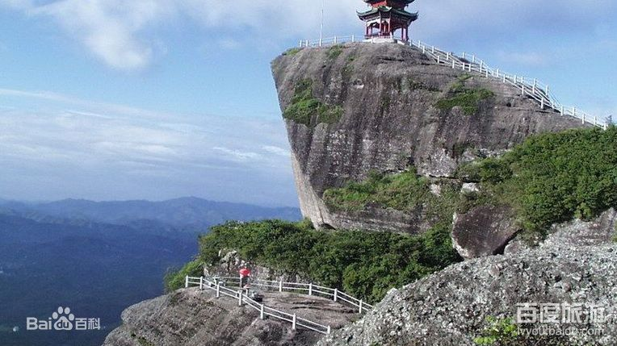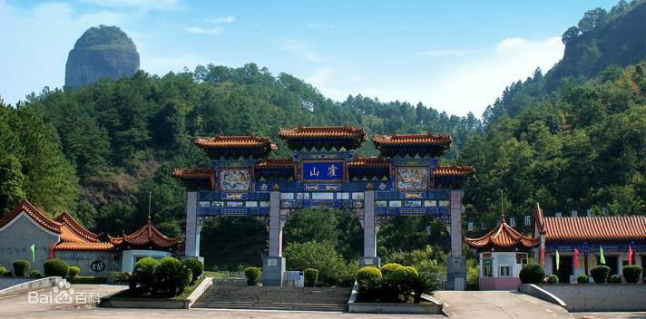
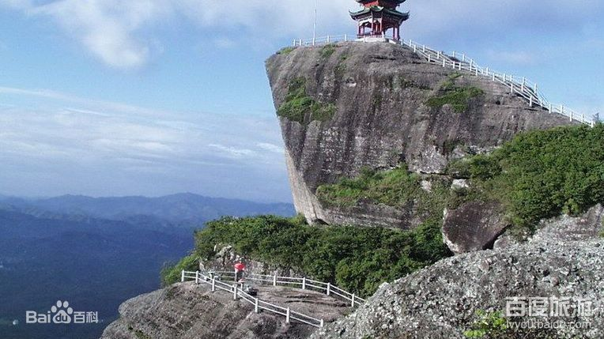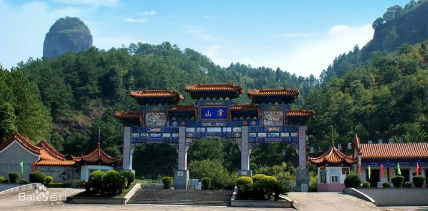 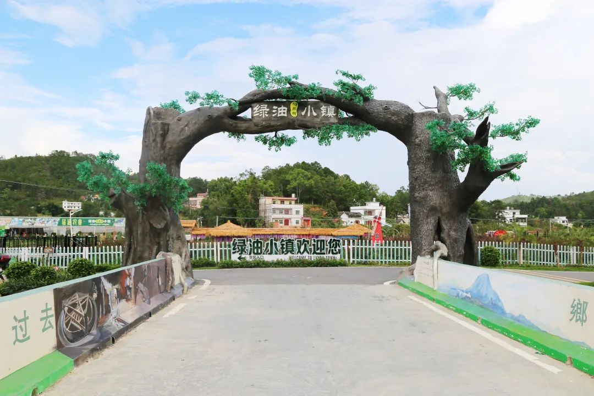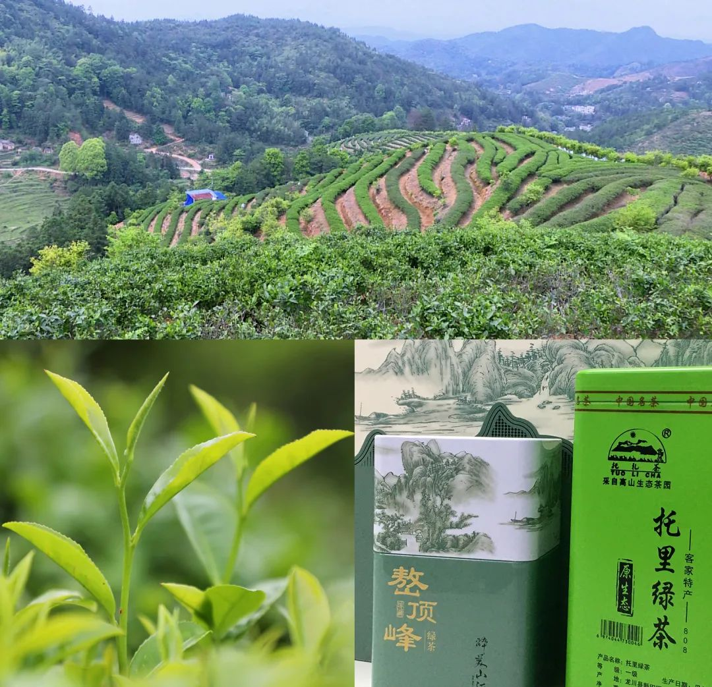
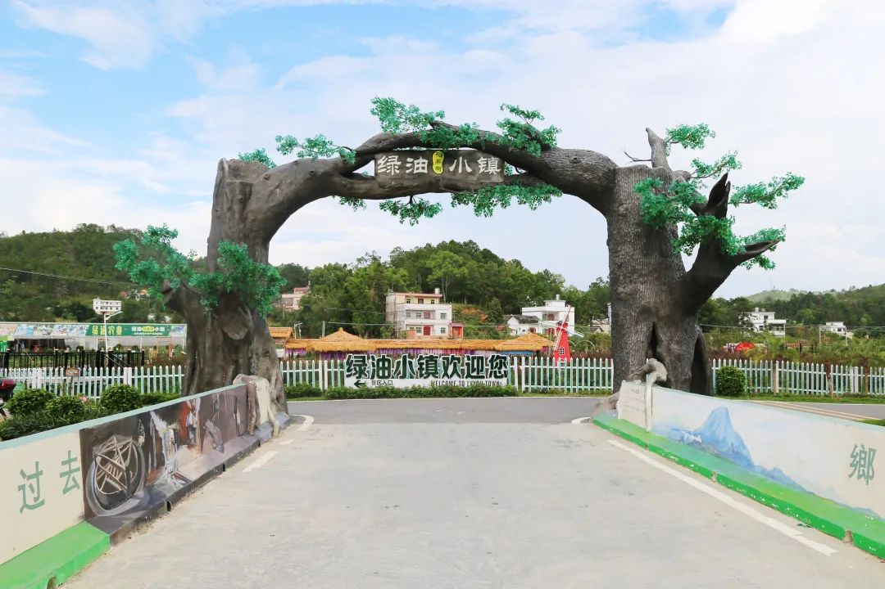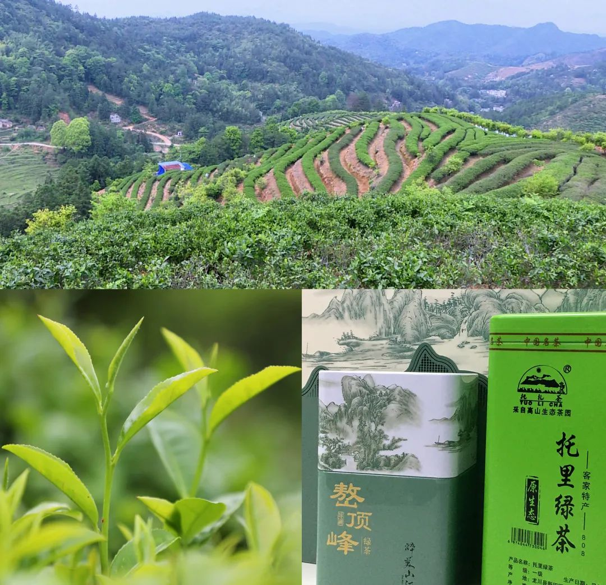